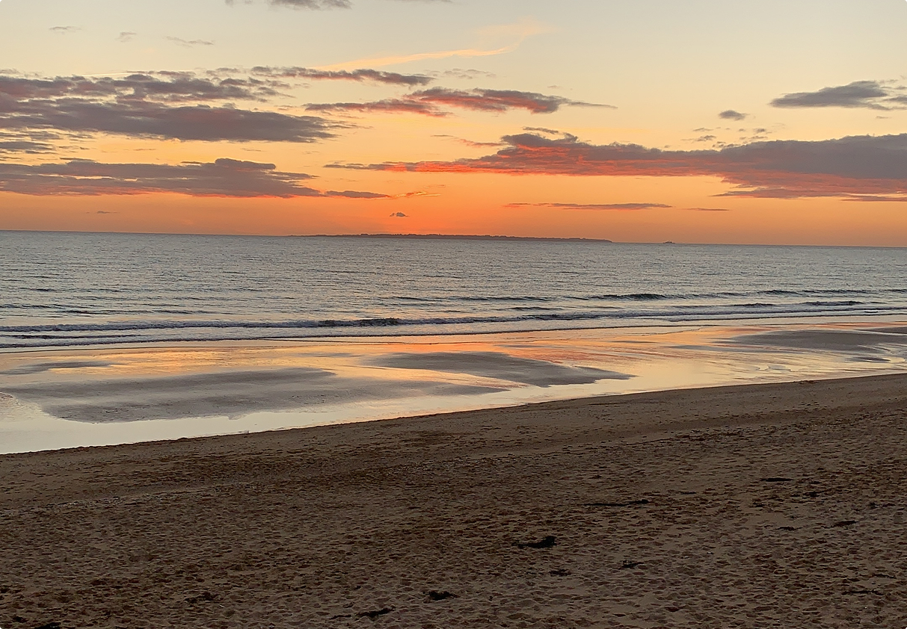
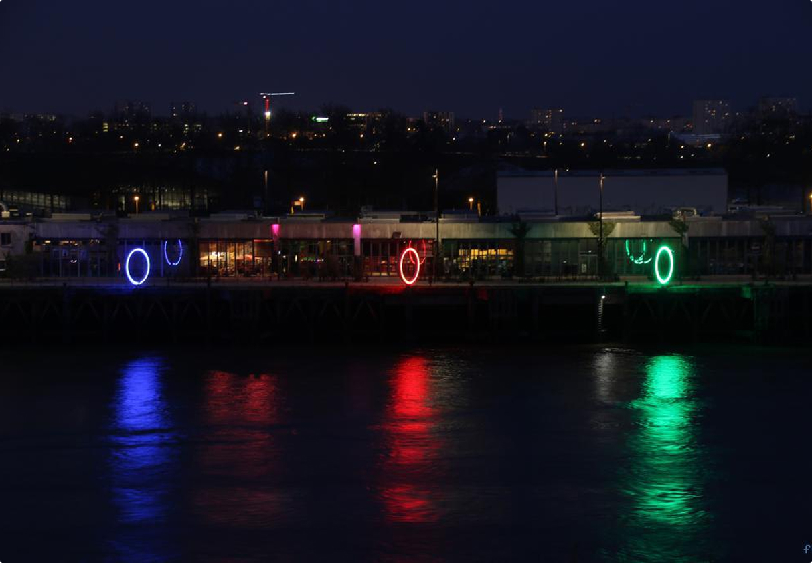
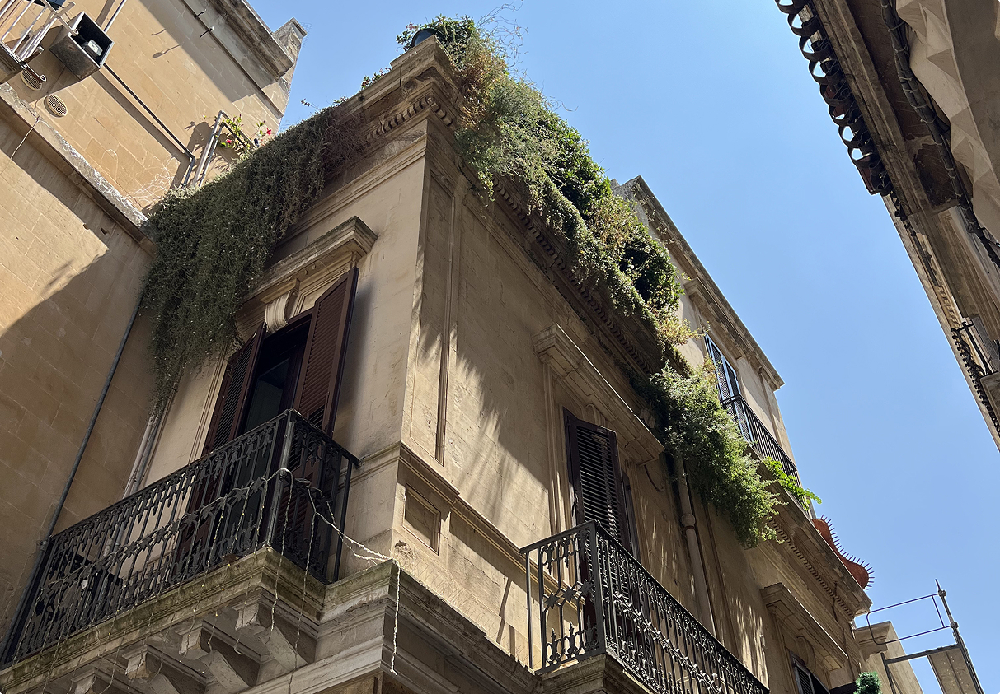

Social
Tourné vers les autres et curieux, je cherche à améliorer l'expérience des usagers tout en facilitant le travail des équipes avec lesquelles je collabore.
Je suis Lucas
designer numérique (UX/UI & Product)
vivant à Nantes.
Né une GameBoy à la main, j'ai abandonné mon rêve d'enfant de devenir paléontologue pour devenir UX Designer. Pourquoi ? Tout simplement parce que j'ai toujours aimé bricoler, créer, apprendre et comprendre.
- Mise en place d'une organisation concernant la user research. En 2 ans, le nombre de retours clients a été multiplié par 4 entre 2017 et 2019 et les retours utilisateurs sont redevenus un élément clé dans le processus de décision sur les produits ;
- Amélioration de l'onboarding usager, conception d'une Free Trial toujours active depuis 2021 ;
- Conception et lancement des produits Akeneo Onboarder (2018) et Akeneo Shared Catalogs (2020), toujours en vente.
- Conception de parcours expérimentaux intégrant de l'IA dans l'UX de nos usagers. Voir le Design System d'Akeneo.
- Lead Product Designer : construction de la stratégie design et de la culture produit, incluant la mise en place de rituels, le suivi des métriques, l'organisation de kick-offs trimestriels, de team buildings, le recrutement et l'acculturation des équipes au design. Équipe Design de 1 à 3 en 11 mois et création d'un tableau de compétences et de salaires dans le cadre de la politique de l'entreprise de transparence sur les salaires ;
- Conception d'un persona partagé au sein de toute l'entreprise : Lauren ;
- Lancement d'un Design System et refonte totale de la plateforme dans un objectif commerciale. Augmentation de nombre de verbatims positifs sur l'UX de la part de nos clients et fondamentaux toujours utilisés.
👁️ Interface à mon arrivée en T4 2021
⭐️ Nouvelle interface suite au lancement du Design System post T1 2023 : sur ce lien, sur ce lien aussi ou bien encore sur ce lien.
- Projet Zéro Logement Vacant (depuis juillet 2023) :
- Projet Longue vie aux objets (depuis janvier 2024) :
Tourné vers les autres et curieux, je cherche à améliorer l'expérience des usagers tout en facilitant le travail des équipes avec lesquelles je collabore.
Transparent, direct et respectueux, nous partageons les constats ensemble et avançons ensemble sans surprise.
Polyvalent, j'aime être le couteau suisse d'une équipe tels que sur des domaines comme le développement commercial, le SEO, l'accessibilité et le code.
Lucas nous a accompagné pour une mission ponctuelle qui nous a permis de débloquer le parcours utilisateur de déclaration de données. Il a su rapidement apprivoiser le sujet et s'adapter aux membres de l'équipe. Une belle énergie et des compétences certaines dans son domaine. Merci ! ”
I had the pleasure of working with Lucas, who was the Lead Product Designer of our team, for 4 months. Lucas was an empathetic manager who really knew how to listen and ask thoughtful questions; a testament to his skills as a UX designer. I learned so much from his attentive guidance and admired his great communication skills, stakeholder management, and his positive influence on the product. He was not only excellent at rapid and strategic decision making, he was also always thinking about the long term vision of the product and most importantly the sustainable growth of our product design team. I highly recommend working with Lucas :) ”
Lucas nous a accompagné sur des missions courtes mais très stratégiques, d'amélioration UX/UI. Sa compréhension du besoin a été très rapide et a permis a Lucas de nous faire des wireframes puis maquettes de qualité, en gardant une cohérence UX/UI très précise. Son sens de l'adaptation a permis de pouvoir également former les équipes et les accompagner dans les optimisations graphiques. ”
J'ai eu le plaisir de collaborer avec Lucas sur une mission stratège d'audit d'UX/UI de notre plateforme. Lucas nous a livré une analyse complète et détaillée, mixant préconisations, veille concurrentielle et bonnes pratiques. Grâce à son travail, nous avons pu confirmer nos doutes, et refondre la plateforme pour avoir une app plus moderne, intuitive et en phase avec nos objectifs. Je recommande Lucas pour son travail de qualité, sa bonne humeur et son enthousiasme ! ”
J'ai eu la chance de travailler avec Lucas pendant 2 ans sur deux lancements de feature ou produit. A l'écoute des besoins utilisateurs, enjeux business et contraintes techniques, il est un parfait partenaire pour un product manager. Lucas maîtrise tous les aspects du product design (du discovery au delivery and growth) et sait parfaitement interagir avec toutes les parties prenants internes : product management et engineering évidemment mais également data, product marketing, sales et CSM. Sa curiosité intellectuelle et ses qualités collaboratives sont des atouts dans une équipe. Je retravaillerai avec plaisir avec lui et ne peux que le recommander. ”
J'ai travaillé pendant 6mois dans l'équipe design de Lucas, une super expérience ! Lucas est un manager très à l'écoute et toujours de bons conseils. Il accorde beaucoup d'importance au bien-être de son équipe et laisse la place à l'échange. Toujours partant pour tester de nouvelles méthodologies/outils poussés par l'équipe : j'ai beaucoup apprécié son regard critique, fondé et bienveillant. Je recommande vivement de travailler avec Lucas 💪 ”
Ah oups, désolé, je vais un peu vite en besogne ! En échange et pour parler un peu de moi, voici des photos de lieux que j'adore.



Mon agenda est grand ouvert si vous souhaitez qu'on échange sur des questions ou sur votre projet.
Prendre un rendez-vousToutes les réponses à vos questions en moins de 150 caractères (et pourtant, je suis un grand bavard) :